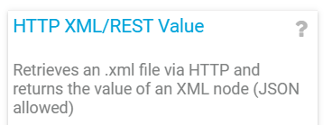
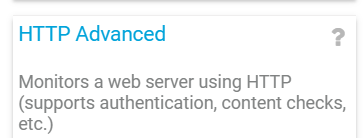
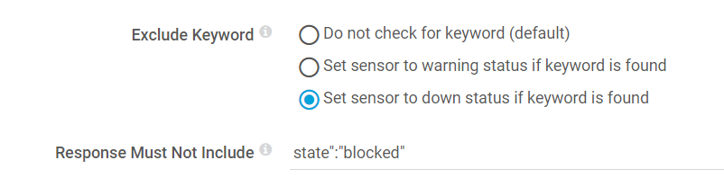
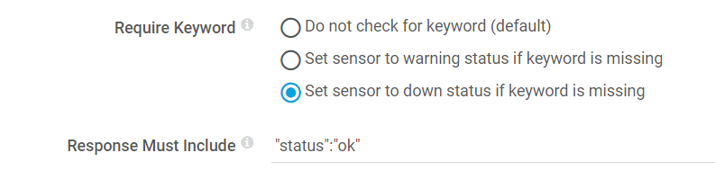
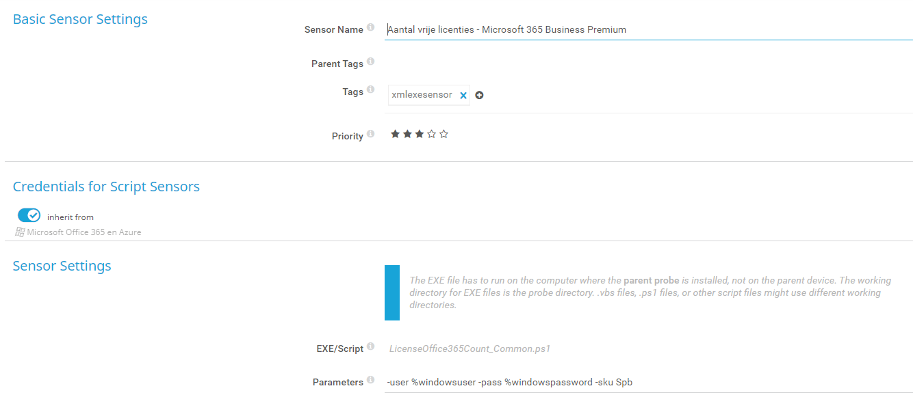
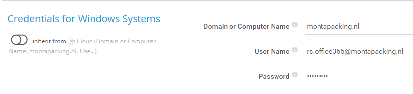

PRTG
Algemeen
PRTG wordt gebruikt om alles rond servers, netwerken etc. te monitoren.
SMS
PRTG heeft de mogelijkheid om sms-jes te sturen als notificatie.
Er zijn 2 sjablonen gedefinieerd:
SMS , hierbij wordt alleen buiten kantoortijden een sms gestuurd
SMS altijd , hierbij wordt op elk tijdstip een sms gestuurd.
RabbitMQ
Zie : https://blog.cdemi.io/monitoring-rabbitmq-in-prtg/
Op de Linux-server moet het account PRTG aangemaakt worden.
Naast de standaard Linux-sensoren dienen de volgende sensoren aangemaakt te worden om RabbitMQ goed te kunnen monitoren.
Voor al deze sensoren geldt dat de HTTP User Name prtg is met het wachtwoord uit passwordstate.
De sensor is een ptfsensor :

Messages in Queue
URL : http://mp-rabbitmq10.montapacking.nl:15672/api/overview\
XML Node : queue_totals/messages
Primary Channel : Queues (#)
Consumers
URL : http://mp-rabbitmq10.montapacking.nl:15672/api/overview\
XML Node : object_totals/consumers
Primary Channel : Consumers (#)
Connections
URL : http://mp-rabbitmq10.montapacking.nl:15672/api/overview\
XML Node : object_totals/connections
Primary Channel : Connections (#)
Voor de onderstaande sensoren geldt dat het type een httpsensor is: 
Is one ore more connections State Blocked?
URL : http://mp-rabbitmq10.montapacking.nl:15672/api/connections

RabbitMQ10 - Alarm Status
URL : http://mp-rabbitmq10.montapacking.nl:15672/api/health/checks/alarms

Sensoren voor Linux webservers bij TransIP
Voor de webservers bij TransiP is de community-name : 209ijvfwer0df92jd
Na aanraden van sensoren en deze toevoegen zijn de volgende aanpassingen gemaakt:
Sesnor traffic local host verwijderen.
De Linux Gemiddeld Belasting moet een waarde hebben onder het aantal cores.
Hiervoor is bij 8 cores een hoge waarschuwingsgrens van 6 ingesteld en een hoge foutgrens van 8.
De Virtuele memory = Fysieke memory + swap space.
Voor de swap space hanteren we een lage waarschuwingsgrens van 50 en een lage foutgrens van 10.
Sensoren voor Office licenties
In "\mp-prtg01\c$\Program Files (x86)\PRTG Network Monitor\Custom Sensors\EXEXML" staat een powershell-script "LicenseOffice365Count_Common.ps1".
Hierin worden de volgende 3 parameters gebruikt :
param (
[string]$User ="",
[string]$Pass = "",
[string]$Sku = ""
)
In de sensor wordt de sku opgegeven. 
Bij de settings van de credentials voor Windows Systems worden de usernaam en password opgegeven. 